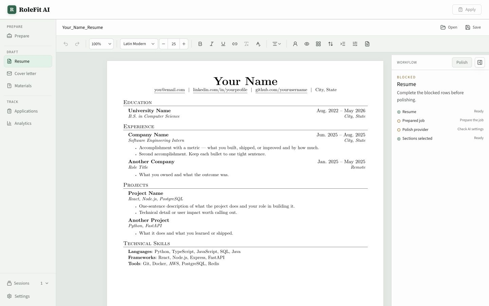
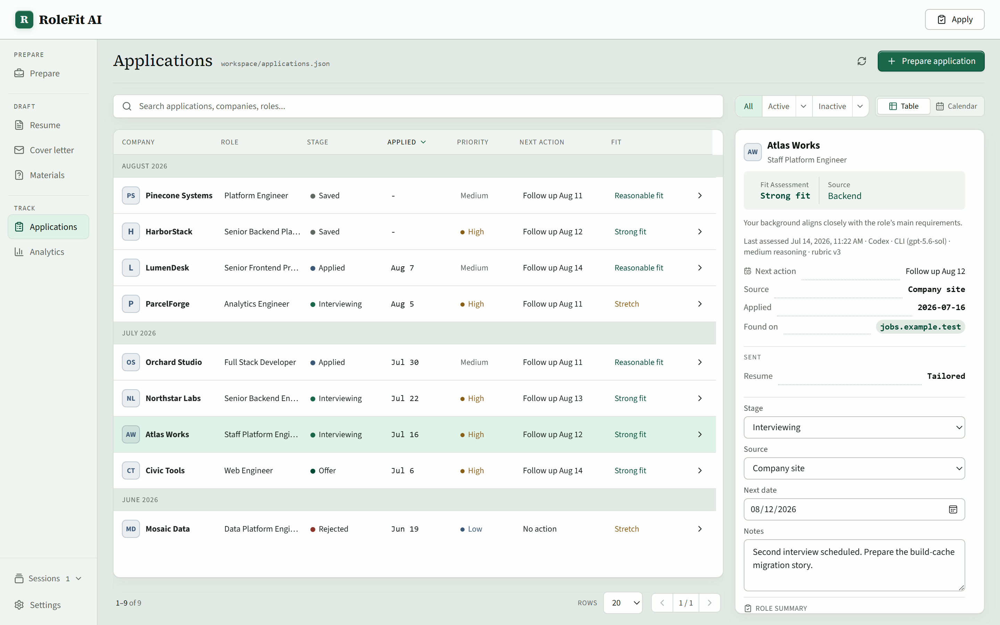

macos
Apple silicon
M1 or newer
DMG
View releasesLocal-first application workbench
Turn one job description into an honest tailored resume, a strict review, and a tracked application. Your workspace stays on this machine.

Paste a description, import a supported job link, or send it over from the browser extension.
Use a CLI session or API provider you explicitly added. Unsupported claims stay out of the draft.
A strict review reports coverage, fit, risk, and suggested edits against the actual role requirements.
Export the same layout you edited, save the structured resume, and track the application.

Type directly in the export layout. Reorder sections, adjust formatting, navigate review findings back to exact fields, and produce a PDF from the same document model.
.resume files for editable backupsThe companion starts the loopback service and opens the full workspace in your normal browser. This page never probes localhost or tries to detect an install.
No hosted RoleFit backend. No login, cloud workspace, credential proxy, sync service, or telemetry. When you run AI, the job or resume input required for that action goes directly to the provider you configured.
The companion keeps RoleFit local, stores supported API keys with operating-system encryption, and connects the CLI providers you choose. No RoleFit account. macOS and Windows.
M1 or newer
DMG
View releasesIntel processor
DMG
View releasesx64 setup
EXE
View releases